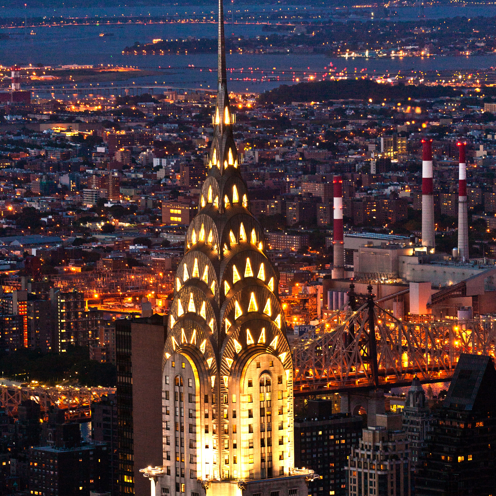

Epoca Modernă
Beaux-Arts

Arhitectura Beaux-Arts denotă stilul arhitectural clasic academic care a fost predat la École des Beaux Arts din Paris. Stilul Beaux-Arts e mai presus de toate produsul cumulativ al a două secole și jumătate de instruire sub autoritate, mai întâi Académie royale d'architecture, apoi, după Revoluție, secțiunea de Arhitectură a Académie des Beaux-Arts. Organizarea în cadrul vechiului regimului al competiției pentru Marele Prix de Rome la arhitectură, oferind șansa de a studia la Roma, și-a imprimat codurile și estetica cursului de instruire, care a culminat în timpul celui de-al Doilea Imperiu (1850-1870) și celei de-a Treia Republică care a urmat. Stilul de instruire care a produs arhitectura Beaux-Arts a continuat fără o schimbare majoră până în 1968. Caracteristici arhitecturii Beaux-Arts includ:
- Aspecte monumentale și greoaie
- Acoperișuri plate sau în patru ape
- Partere înălțate și cu fațadele cu bosaje
- ierarhie a spațiilor, de la „spații nobile” - intrări și scări grandioase – la cele utilitare
- Ferestre arcuite
- Uși arcuite și cu frontoane deasupra
- Detalii clasice: referințe ale unei sinteze de stiluri istorice și o tendință spre eclectism; fluent într-un număr de „mamiere”
- Simetrie
- Sculptură statuară (panouri cu basoreliefuri, sculpturi figurale, grupuri sculpturale), picturi murale, mozaicuri, și alte opere de artă, toate coordonate în temă astfel încât să afirme identitatea clădirii
- Detalii arhitecturale clasice: balustrade, pilaștri, festoane, cartușe, acrotere, cu o expunere proeminentă a consolelor și a coloanelor decorative
- Policromie subtilă
Art Nouveau
În jurul anului 1900, un număr de arhitecți din toată lume au început să dezvolte noi soluții arhitecturale pentru integrarea precedentelor tradiționale cu noile cerințe sociale și posibilități tehnologice, inspirându-se din forme și structuri naturale, în special liniile curbate ale plantelor și florilor. Opera lui Victor Horta și Henry van de Velde la Bruxelles, Antoni Gaudí la Barcelona, Otto Wagner la Viena și Charles Rennie Mackintosh la Glasgow, printre mulți alții, poate să fie văzută ca o luptă comună între vechi și nou.
Arhitectura Art Nouveau a fost o reacție împotriva stilurilor eclectice care au dominat arhitectura europeană în a doua jumătate a secolului al XIX-lea. S-a exprimat prin decorare: fie ornamentală (pe bază de flori și plante, de exemplu ciulini, iriși, ciclameni, orhidee, nuferi etc.), fie sculpturală. În timp ce fețe de oameni (sau mascaroane) sunt denumite ornamente, folosirea figurii umane în diferite forme de sculptură (statui și reliefuri) a fost, de asemenea, tipică pentru Art Nouveau. Înaintea Secesiunii Vieneze, a stilului romantic național, și a Jugendstil-ului, fațadele erau asimetrice și adesea decorate cu plăci ceramice policrome. Decorul sugerează de obicei mișcarea; nu a existat nicio distincție între structură și ornament. Motivul biciului adoptat de la formele vegetale a fost folosit pe scară largă.
Modernismul Timpuriu
Arhitectura modernă timpurie a început cu o serie de stiluri de construcții cu caracteristici similare, în primul rând simplificarea formei și eliminarea ornamentelor, care au apărut prima dată în jurul anului 1900. Până în anii 1940, aceste stiluri s-au consolidat în mare parte și au fost identificate ca stilul internațional.
Caracteristicile și originile exacte ale arhitecturii moderne sunt încă deschise interpretării și dezbaterii. Un declanșator important pare să fi fost maxima atribuită lui Louis Sullivan: „Forma urmează funcția”. Funcționalismul în arhitectură e principiul conform căruia arhitecții ar trebui să proiecteze o clădire pe baza scopului acelei clădiri. Această afirmație este mai puțin evidentă decât pare prima dată și e o chestiune de confuzie și controversă în cadrul profesiei, în special în ceea ce privește arhitectura modernă.
Expresionismul
Arhitectura expresionistă a fost o mișcare arhitecturală care s-a dezvoltat în Europa de Nord în primele decenii ale secolului al XX-lea în paralel cu artele vizuale expresioniste.
Stilul s-a caracterizat printr-o adopție modernistă timpurie de materiale noi, inovație formală și dispuneri foarte neobișnuite ale maselor, fiind uneori inspirat de forme biomorfe naturale, alteori de noile posibilități tehnice oferite de producția în masă a cărămizii, oțelului și în special sticlei. Mulți arhitecți expresioniști au luptat în Primul Război Mondial și experiențele lor, combinate cu frământările politice și răsturnările sociale care au urmat Revoluției germane din 1919, au dus la o perspectivă utopică și la o agendă socialistă romantică. Condițiile economice au limitat sever numărul de comenzi de clădiri construite între 1914 și mijlocul anilor 1920, având ca rezultat multe dintre cele mai importante lucrări expresioniste care au rămas ca proiecte pe hârtie, ca Arhitectura alpină a lui Bruno Taut și Casa Nova. Zukunftsarchitektur - Formenspiel und Feinbau. a lui Hermann Finsterlin.
Art Deco
Stilul Art Deco în arhitectură a apărut la Paris chiar înainte de Primul Război Mondial cu Théâtre des Champs-Élysées al lui Auguste Perret (1911–1913) și Clădirea Majorelle a lui Henri Sauvage (1913). Folosirea revoluționară a betonului armat, a formelor geometrice, a liniilor drepte și a sculpturii decorative aplicate pe exterioarele clădirilor în plăci de marmură, ceramică și stuc, și mai târziu din oțel inoxidabil, au fost o abatere de la Art Nouveau. Apogeul stilului a fost în anii 1920 și 1930 și și-a luat numele de la Expoziția Internațională de Arte Moderne, Industriale și Decorative de la Paris din 1925.
Art Deco a devenit deosebit de popular în Statele Unite la sfârșitul anilor 1920, unde stilul a fost folosit pentru zgârie-nori, inclusiv la Chrysler Building (1930) și Empire State Building (1931), și pentru palatele fastuoase de film, inclusiv Radio City Music Hall (1932) în New York și Paramount Theatre din Oakland (California). În anii 1930, a apărut o variantă dezactivată numită modernism pachebot, care a fost inspirată de formele curbate aerodinamice ale avioanelor și trenurilor. Art Deco a fost folosit pentru clădiri de birouri, clădiri guvernamentale, gări și cinematografe din întreaga lume în anii 1930, dar a scăzut rapid la sfârșitul deceniului din cauza Marii Crize Economice și a criticilor intense ale stilului de către arhitecții moderniști ca Le Corbusier, care a denunțat ceea ce a simțit că ar fi ornamentarea sa excesivă. Până în 1939, stilul a devenit în mare parte demodat și a fost înlocuit cu stilul internațional mai auster, colțuros și sec.